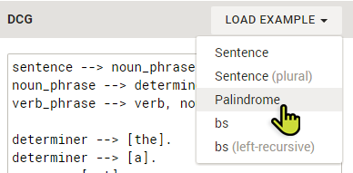
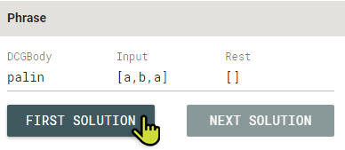
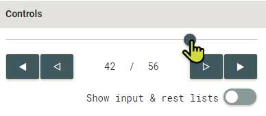
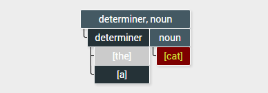

visualisation --> ['declare grammar rules'], ['phrase query'], ['click find solution'].
To use the tool, a DCG must first be specified.
In addition of formulating a DCG by yourself, a grammar can be selected from existing examples and modified as desired.

It is possible to utilise the following language components:
A DCG can be queried as if utilising the ISO predicate phrase/3. Required is the specification of the queried DCG body, an input and a rest list. The usage of variables instead of (partially) instantiated lists is possible.
If the DCG is based on strings, these can be used instead of character lists, too. These are converted to lists of individual characters during execution.
An execution of a query is initiated with the button 'First Solution'. If the request was successful, further solutions can be retrieved via 'Next Solution'. When a solution is retrieved, the last step of its execution is displayed in the visualisation panel.
The interactive navigation through execution steps is possible using the provided inputs in the menu Controls. The slider allows a quick selection of arbitrary execution steps.
Underneath are buttons for stepping through the execution. There are buttons for single increments as well as buttons that jump directly to the next or last solution.
If desired, input and rest lists can be displayed for each goal in the visualisation.
The displayed result can be zoomed with provided buttons. In addition, the visualisation can be panned by dragging with the mouse.
As soon as a form field is changed, the visualisation is disabled. Otherwise the visualisation could be no longer in sync with the DCG and query. Of course, a new query can be executed. Then, deactivated elements become active again.
The visualisation shows the execution by means of a parse tree extended by failing goals.
Each called goal is presented as a box. The topmost box holds the queried grammar body. Multiple choices are below each other indicated by the corresponding lines. Sub goals are displayed directly next to each other. Event types are colour coded:
The current goal is highlighted with green text colour. If there is an associated rule, this is also marked in the editor. Hovering over goals also highlights corresponding rules.